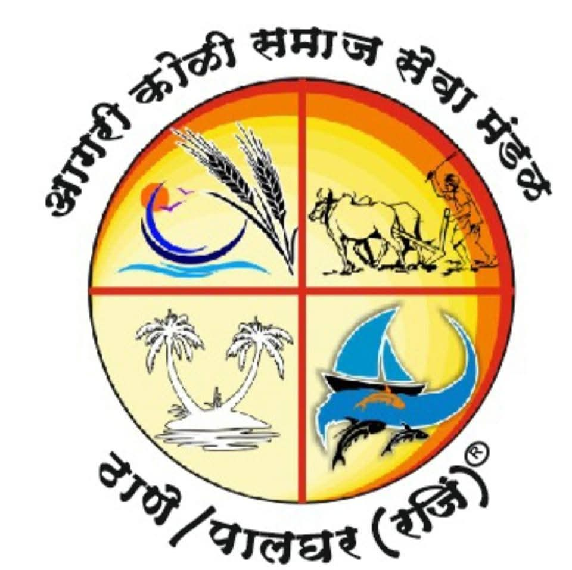
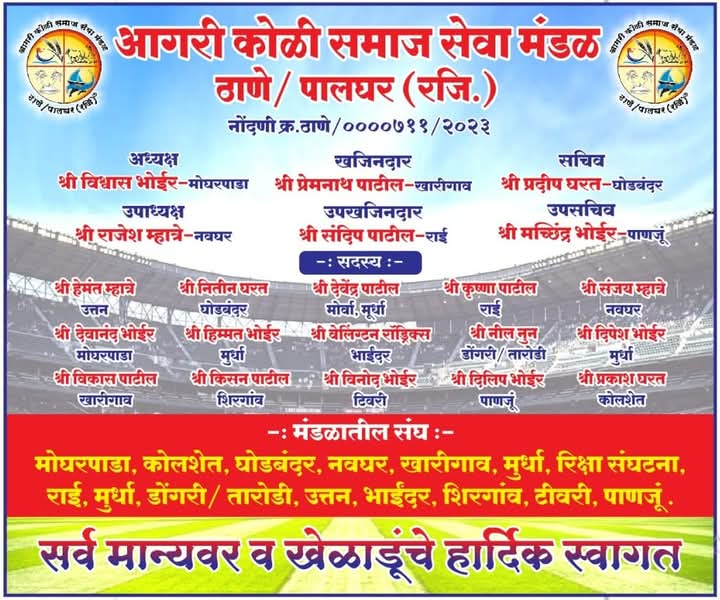

समाजासाठी एकत्र येऊया, सेवा करूया!
आगरी कोळी समाज सेवा मंडळ ही एक नोंदणीकृत सामाजिक संस्था आहे जी आगरी व कोळी समाजाच्या सर्वांगीण विकासासाठी कार्य करते. आमचा उद्देश समाजाला शिक्षण, आरोग्य, रोजगार आणि एकात्मतेच्या दिशेने घेऊन जाणे आहे.
आगरी कोळी समाज सेवा मंडळ ठाणे/पालघर (रजि) ची अधिकृत कार्यकारिणी आणि सभासद यांची यादी:
मोघरपाडा, कोळशेत, घोडबंदर, नवघर, खारोंडा, मुरबी, रक्षा संघटना, राय, डोंगरी, नारोडी, उत्तन, भाईंदर, शिरगाव, टिघोरी, पाणघर
आजच्या घडीला वयाच्या चाळिशीनंतरही क्रिकेट खेळण्याची आवड जपणाऱ्या अनेक खेळाडूंसाठी अॅग्रो कोळी ४०+ क्रिकेट संघटना म्हणजे एक प्रेरणास्थान आहे. कोळी समाजातील आणि शेतीशी निगडीत असलेल्या खेळाडूंना एकत्र आणून, त्यांच्यातील क्रिकेटची ओढ जपण्यासाठी ही स्पर्धा एक उत्कृष्ट व्यासपीठ उपलब्ध करून देते.
या वयोगटातील खेळाडूंमध्ये अनुभव, संयम आणि तांत्रिक कौशल्याचा अनोखा संगम दिसून येतो. तरुणपणी क्रिकेट खेळलेले आणि आता जबाबदाऱ्या सांभाळूनही आपल्या छंदाशी नातं तोडू न इच्छिणारे हे खेळाडू या स्पर्धेमुळे पुन्हा मैदानात उतरतात. अॅग्रो कोळी ४०+ क्रिकेटमुळे अनेक गावांमध्ये स्थानिक स्तरावर उत्साह निर्माण झाला आहे. ही स्पर्धा केवळ क्रिकेटपुरती मर्यादित नसून, ती समाजात बंधुभाव, आरोग्यसंपन्न जीवनशैली आणि खेळाभोवती समाजाचे एकत्रीकरण घडवते.
अशा प्रकारच्या स्पर्धा खेळाडूंना नवचैतन्य देतातच, पण नव्या पिढीसाठी आदर्श ठरतात. वयाच्या पुढच्या टप्प्यावरही जोमाने खेळता येते, याचा प्रत्यय अॅग्रो कोळी ४०+ क्रिकेट स्पर्धांमुळे येतो. त्यामुळे अशा उपक्रमांना समाजातून आणि शासनाकडून प्रोत्साहन मिळणं गरजेचं आहे.
निष्कर्ष:
आगरी कोळी ४०+ क्रिकेट ही केवळ एक स्पर्धा नाही, तर ती एक चळवळ आहे—वयाच्या मर्यादा झुगारून, खेळाच्या माध्यमातून समाजबांधणी घडवणारी एक प्रेरणादायी गोष्ट.
आगरी कोळी समाज सेवा मंडळ ठाणे/पालघर (रजि) ची कार्यकारिणी समिती व अंतर्गत संघांचे सविस्तर माहिती खालीलप्रमाणे:

📧 ईमेल: agari.koli.samja.seva.mandal@gmail.com.org
📞 फोन: +91-8433645888
📍 पत्ता: ठाणे / पालघर, महाराष्ट्र, भारत
{kind=link}